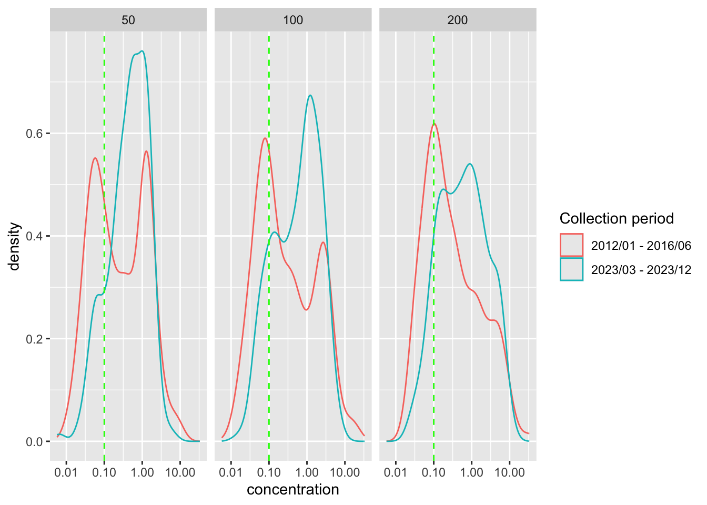
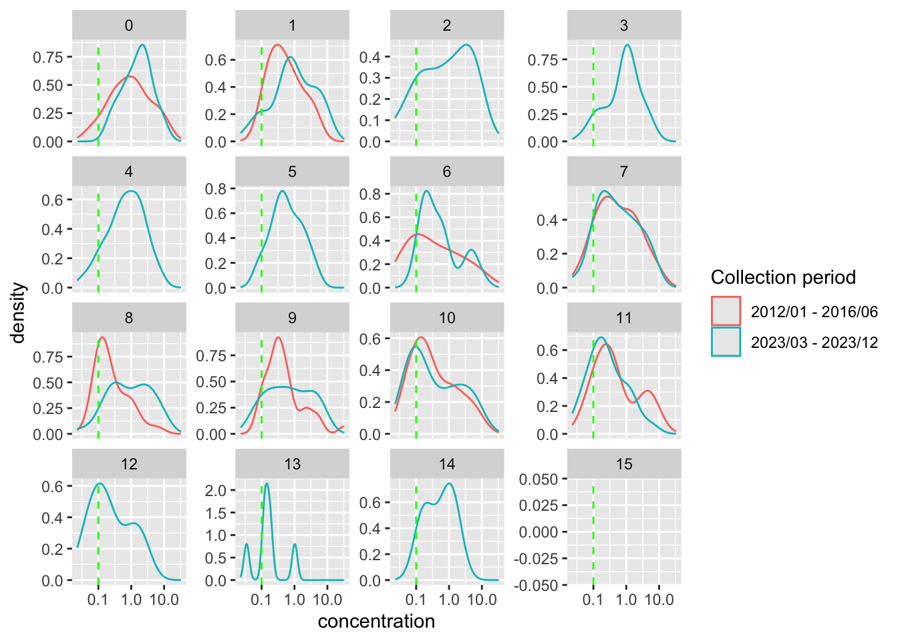
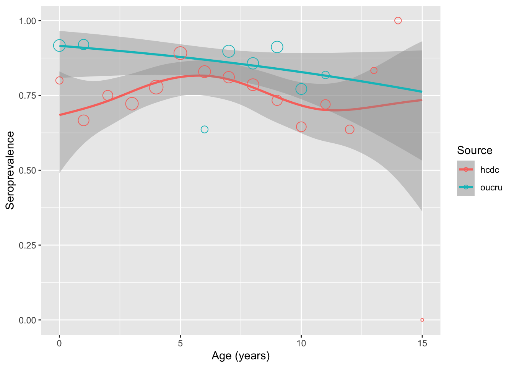

library(tidyverse)
library(gt)
library(mgcv)
all_tetanus <- readRDS("data/preprocessed/all_samples.rds")IDA for tetanus data
Concentration
There is currently no specific threshold to classify tetanus serostatus, for this analysis, a conservative threshold of 0.1IU/ml is used.
# threshold to be considered positive
positive_threshold <- 0.1Preprocess data
Label whether it is oucru or hcdc sample
Compute rounded age
Compute titer
- Use
medianvalue to compute where available, uselowerorupperotherwise
- Use
Label whether the sample is considered positive using 0.1IU/ml threshold
Also filter samples from HCMC only
Code for preprocessing data
preprocessed_data <- all_tetanus %>%
mutate(
log_titer = case_when(
!is.na(median) ~ median,
!is.na(upper) ~ upper,
!is.na(lower) ~ lower,
.default = NA
),
titer = (10^log_titer)*dilution_factors,
serostatus = if_else(titer>0.1, "positive", "negative"),
source = if_else(str_detect(sample_id, "^U"), "hcdc", "oucru"),
age = case_when(
!is.na(dob) ~ as.double(difftime(date_collection, dob, unit = "days"))/365.25,
!is.na(exact_age) ~ exact_age,
!is.na(age_min) ~ age_min,
!is.na(age_max) ~ age_max,
.default = NA
),
rounded_age = round(age)
) %>%
filter(
province %in% c("HCMC", "Hồ Chí Minh", "HỒ CHÍ MINH")
)Different dilutions
Visualize distribution of titer at different dilution levels and the positive threshold
Plot distribution of log titer at different dilutions
preprocessed_data %>%
ggplot() +
geom_density(
aes(
x = titer,
color = source
)
) +
geom_vline(
aes(
xintercept = positive_threshold
),
color = "green",
linetype = "dashed"
) +
scale_x_log10() +
facet_wrap(~ dilution_factors)
# which dilution factor for the following analyses
dilution_fct <- 200OUCRU vs HCDC titer
Distribution of titer for each age group
Plot distribution of titer stratified by age
preprocessed_data %>%
filter(
rounded_age <= 15,
dilution_factors == dilution_fct
) %>%
ggplot() +
geom_density(
aes(
x = titer,
color = source
)
) +
geom_vline(
aes(xintercept = positive_threshold),
color = "green",
linetype = "dashed"
) +
scale_x_log10()+
facet_wrap(~ rounded_age, scales = "free_y")
Box plot of titer per age group
Code for box plot of titer
preprocessed_data %>%
filter(
rounded_age <= 15,
dilution_factors == dilution_fct
) %>%
ggplot() +
geom_jitter(
aes(
x = source,
y = titer,
color = source
),
alpha = 0.2
) +
geom_boxplot(
aes(
x = source,
y = titer,
color = source
),
fill = NA
) +
geom_hline(
aes(yintercept = positive_threshold),
color = "green",
linetype = "dashed"
) +
scale_y_log10()+
facet_wrap(~ rounded_age, scales = "free_y")
Note:
- There is no samples from OUCRU for age groups
2 - 5and12 - 15
The following table summarizes number of samples for each rounded age from each source
Check sample size for each age-group
preprocessed_data %>%
filter(
rounded_age <= 15,
dilution_factors == dilution_fct
) %>%
group_by(source, rounded_age) %>%
count() %>%
pivot_wider(
names_from = source,
values_from = n
)# A tibble: 16 × 3
# Groups: rounded_age [16]
rounded_age hcdc oucru
<dbl> <int> <int>
1 0 10 36
2 1 39 25
3 2 28 NA
4 3 54 NA
5 4 63 NA
6 5 46 NA
7 6 41 11
8 7 37 39
9 8 42 35
10 9 30 34
11 10 31 35
12 11 25 11
13 12 22 NA
14 13 6 NA
15 14 6 NA
16 15 1 NAStratified by age group
Separate the data into 2 age groups: <4 and 6-11 for comparison
Compute age group for stratification
data_by_agegrp <- preprocessed_data %>%
mutate(
age_group = case_when(
age < 4 ~ "< 4",
age >= 6 & age <= 11 ~ "6-11"
),
.default = NA
) %>%
filter(
!is.na(serostatus),
!is.na(age_group),
dilution_factors == dilution_fct
) Perform t-test to compare distribution of titer (on log scale) of 2 age groups (<4, 6-11) between OUCRU and HCDC samples
Perform t-test to compare log titer for 2 age groups
concentration_by_agegrp <- data_by_agegrp %>%
group_by(
age_group
) %>%
nest() %>% # divide the data.frame by each age group
mutate(
# perform t.test to compare samples from each source
t_test = map(data,
~ t.test(
log_titer ~ source, data = .x
)
),
t_test_p = map_dbl(t_test, ~.x$p.value),
# compute summary for samples from each source (HCDC and OUCRU)
dat_summary = map(data, \(dat){
dat %>%
group_by(source) %>%
summarize(
median_titer = median(titer),
lwr = quantile(titer, probs = 0.25),
upper = quantile(titer, probs = 0.75)
) %>%
mutate(
label = sprintf("%.4f (%.4f–%.4f)",
median_titer,
lwr,
upper),
.keep = "unused"
)
}
)
) %>%
unnest(
dat_summary
) %>%
pivot_wider(
names_from = source,
values_from = label
)Generate the comparison table
concentration_by_agegrp %>%
select(age_group, oucru, hcdc, t_test_p) %>%
rename(
p_value = t_test_p
) %>%
ungroup() %>%
gt(rowname_col = "age_group") %>%
tab_header(title = "Log(titer) by sample source and age group") %>%
tab_style(
style = list(cell_text(weight = "bold")),
locations = list(
cells_column_labels(everything()),
cells_stub()
)
)| Log(titer) by sample source and age group | |||
| oucru | hcdc | p_value | |
|---|---|---|---|
| < 4 | 0.6785 (0.2746–1.6855) | 1.0190 (0.3935–2.4593) | 0.41108950 |
| 6-11 | 0.3003 (0.1272–1.0368) | 0.4920 (0.1667–2.0445) | 0.01841121 |
Note:
- The result suggests that there is a statistically significant difference between
log(titer)of OUCRU and HCDC samples for older age group (6-11), more specifically: log(titer) from HCDC samples is higher.
The following plots demonstrate the distribution of log(titer)
Generate the density plot
concentration_by_agegrp %>%
unnest(data) %>%
ggplot() +
geom_density(
aes(
x = titer,
color = source
)
) +
geom_vline(
aes(xintercept = positive_threshold),
color = "green",
linetype = "dashed"
) +
scale_x_log10() +
facet_wrap(~ age_group, scales = "free_y")Generate the box plot
concentration_by_agegrp %>%
unnest(data) %>%
ggplot() +
geom_jitter(
aes(
x = source,
y = titer,
color = source
),
alpha = 0.2
) +
geom_boxplot(
aes(
x = source,
y = titer,
color = source
),
fill = NA
) +
geom_hline(
aes(yintercept = positive_threshold),
color = "green",
linetype = "dashed"
) +
scale_y_log10()+
facet_wrap(~ age_group, scales = "free_y")
Seroprevalence
Comparison table
Compute prevalence and confidence interval
prevalence_by_agegrp <- data_by_agegrp %>%
group_by(
source, age_group
) %>%
summarize(
seropositive = sum(serostatus == "positive"),
sample_size = n()
) %>%
rowwise() %>%
mutate(
seroprevalence = seropositive/sample_size,
seroprevalence_ci = list(
prop.test(
x = seropositive, n = sample_size,
conf.level = 0.95)$conf.int
),
seroprevalence_lwr = seroprevalence_ci[[1]],
seroprevalence_upper = seroprevalence_ci[[2]]
)`summarise()` has grouped output by 'source'. You can override using the
`.groups` argument.generate the table
prevalence_by_agegrp %>%
mutate(
label = sprintf("%.1f%% (%.1f–%.1f%%)",
100 * seroprevalence,
100 * seroprevalence_lwr,
100 * seroprevalence_upper)
) %>%
select(source, age_group, label) %>%
pivot_wider(names_from = source,
values_from = label) %>%
gt(rowname_col = "age_group") %>%
tab_header(title = "Seroprevalence by sample source and age group") %>%
tab_style(
style = list(cell_text(weight = "bold")),
locations = list(
cells_column_labels(everything()),
cells_stub()
)
)| Seroprevalence by sample source and age group | ||
| hcdc | oucru | |
|---|---|---|
| 6-11 | 87.2% (80.6–92.0%) | 85.6% (79.0–90.5%) |
| < 4 | 91.9% (85.3–95.8%) | 93.3% (83.0–97.8%) |
Age stratified seroprevalence
Helper function to compute age-stratified seroprev
compute_seroprev <- function(data, age_lim, dilution_fct, group_var){
if(!is.null(group_var)){
out <- data %>%
filter(age<=age_lim, dilution_factors == dilution_fct) %>%
mutate(
serostatus = if_else(serostatus == "positive", 1, 0),
!! group_var := factor(.data[[group_var]])
) %>%
group_by(rounded_age, .data[[group_var]]) %>%
summarize(
pos = sum(serostatus, na.rm = TRUE),
tot = n(),
neg = tot - pos,
seroprev = sum(serostatus, na.rm = TRUE)/n()
) %>%
ungroup()
}else{
out <- data %>%
filter(age<=age_lim, dilution_factors == dilution_fct) %>%
mutate(
serostatus = if_else(serostatus == "positive", 1, 0)
) %>%
group_by(rounded_age) %>%
summarize(
pos = sum(serostatus, na.rm = TRUE),
tot = n(),
neg = tot - pos,
seroprev = sum(serostatus, na.rm = TRUE)/n()
) %>%
ungroup()
}
out
}Check whether there is a difference in seroprevalence between:
OUCRU and HCDC samples
female and male samples
Model stratified by source
# ----- Model with smoothing stratified by source ------
seroprev_mod_source <- preprocessed_data %>%
compute_seroprev(age_lim = 15, dilution_fct = dilution_fct, group_var = "source") %>%
gam(cbind(pos, neg) ~ s(rounded_age, bs = "bs", by = source) + source, data = ., family=binomial(link = "logit"))
summary(seroprev_mod_source)
Family: binomial
Link function: logit
Formula:
cbind(pos, neg) ~ s(rounded_age, bs = "bs", by = source) + source
Parametric coefficients:
Estimate Std. Error z value Pr(>|z|)
(Intercept) 1.0833 0.1254 8.639 < 2e-16 ***
sourceoucru 0.7171 0.2313 3.101 0.00193 **
---
Signif. codes: 0 '***' 0.001 '**' 0.01 '*' 0.05 '.' 0.1 ' ' 1
Approximate significance of smooth terms:
edf Ref.df Chi.sq p-value
s(rounded_age):sourcehcdc 3.201 3.964 5.532 0.204
s(rounded_age):sourceoucru 1.000 1.000 2.021 0.155
R-sq.(adj) = 0.384 Deviance explained = 51.9%
UBRE = 0.29707 Scale est. = 1 n = 24Model stratified by gender
# ----- Model with smoothing stratified by gender ------
seroprev_mod_gender <- preprocessed_data %>%
compute_seroprev(age_lim = 15, dilution_fct = dilution_fct, group_var = "gender") %>%
gam(cbind(pos, neg) ~ s(rounded_age, bs = "bs", by = gender) + gender, data = ., family=binomial(link = "logit"))
summary(seroprev_mod_gender)
Family: binomial
Link function: logit
Formula:
cbind(pos, neg) ~ s(rounded_age, bs = "bs", by = gender) + gender
Parametric coefficients:
Estimate Std. Error z value Pr(>|z|)
(Intercept) 1.4464 0.4409 3.281 0.00104 **
gendermale -0.1741 0.4586 -0.380 0.70425
---
Signif. codes: 0 '***' 0.001 '**' 0.01 '*' 0.05 '.' 0.1 ' ' 1
Approximate significance of smooth terms:
edf Ref.df Chi.sq p-value
s(rounded_age):genderfemale 3.202 3.962 9.037 0.0766 .
s(rounded_age):gendermale 4.099 4.984 9.732 0.0866 .
---
Signif. codes: 0 '***' 0.001 '**' 0.01 '*' 0.05 '.' 0.1 ' ' 1
R-sq.(adj) = 0.355 Deviance explained = 51.3%
UBRE = 0.39283 Scale est. = 1 n = 29Model stratified by gender
# ----- Baseline model (no stratification) ------
seroprev_mod <- preprocessed_data %>%
compute_seroprev(age_lim = 15, dilution_fct = dilution_fct, group_var = NULL) %>%
gam(cbind(pos, neg) ~ s(rounded_age, bs = "bs"), data = ., family=binomial(link = "logit"))
summary(seroprev_mod)
Family: binomial
Link function: logit
Formula:
cbind(pos, neg) ~ s(rounded_age, bs = "bs")
Parametric coefficients:
Estimate Std. Error z value Pr(>|z|)
(Intercept) 1.2720 0.1422 8.946 <2e-16 ***
---
Signif. codes: 0 '***' 0.001 '**' 0.01 '*' 0.05 '.' 0.1 ' ' 1
Approximate significance of smooth terms:
edf Ref.df Chi.sq p-value
s(rounded_age) 4.157 5.049 7.147 0.209
R-sq.(adj) = 0.213 Deviance explained = 42%
UBRE = 0.47588 Scale est. = 1 n = 16Model without stratification for smoothing
# ----- Baseline model (no stratification) ------
seroprev_mod <- preprocessed_data %>%
compute_seroprev(age_lim = 15, dilution_fct = dilution_fct, group_var = NULL) %>%
gam(cbind(pos, neg) ~ s(rounded_age, bs = "bs"), data = ., family=binomial(link = "logit"))
summary(seroprev_mod)
Family: binomial
Link function: logit
Formula:
cbind(pos, neg) ~ s(rounded_age, bs = "bs")
Parametric coefficients:
Estimate Std. Error z value Pr(>|z|)
(Intercept) 1.2720 0.1422 8.946 <2e-16 ***
---
Signif. codes: 0 '***' 0.001 '**' 0.01 '*' 0.05 '.' 0.1 ' ' 1
Approximate significance of smooth terms:
edf Ref.df Chi.sq p-value
s(rounded_age) 4.157 5.049 7.147 0.209
R-sq.(adj) = 0.213 Deviance explained = 42%
UBRE = 0.47588 Scale est. = 1 n = 16Note:
The result from model stratified by (sample) source suggests that:
- Seroprevalence of OUCRU samples is higher (for age group <= 15)
The result from model stratified by gender suggests that:
- There’s no statistically significant difference in seroprevalence between male and female samples (for age group <= 15)
However, it may be due to the fact that the sample size for OUCRU samples is quite small and we don’t have any data for several age groups (2-5, 11-14)
Another issue is that there is an imbalance in the number of male vs female samples (male:female ratio is 13.58:1)
preprocessed_data %>%
filter(source == "hcdc", dilution_factors == dilution_fct) %>%
group_by(gender) %>%
count()# A tibble: 2 × 2
# Groups: gender [2]
gender n
<chr> <int>
1 female 33
2 male 448Quick visualization
Visualize the model for source/gender stratified smoothing
Helper function to visualize model with confidence interval
visualize_pred <- function(data, mod, group_var, ci = 0.95, length_out = 100, cex = 20){
if(!is.null(group_var)){
newdata <- data %>%
select({{group_var}}) %>%
distinct() %>%
crossing(
rounded_age = seq(min(data$rounded_age), max(data$rounded_age), length.out = length_out)
)
}else{
newdata <- data.frame(
rounded_age = seq(min(data$rounded_age), max(data$rounded_age), length.out = length_out)
)
}
linkinv <- mod$family$linkinv
p <- (1 - ci) / 2
n <- mod$df.residual
out <- predict.gam(
mod,
newdata = newdata, se.fit = TRUE) %>%
as_tibble() %>%
select(fit, se.fit) %>%
mutate(
rounded_age = newdata$rounded_age,
lower = linkinv(fit + qt(p, n) * se.fit),
upper = linkinv(fit + qt(1 - p, n) * se.fit),
fit = linkinv(fit)
)
if(!is.null(group_var)){
out <- out %>%
mutate(
!! group_var := newdata[[group_var]]
)
}
ggplot() +
geom_smooth(
aes(
x = rounded_age, y = fit,
ymin = lower, ymax = upper,
color = if(!is.null(group_var)) factor(.data[[group_var]]) else "cornflowerblue"),
data = out,
stat = "identity"
) +
geom_point(
aes(
x = rounded_age, y = seroprev,
size = cex*(pos)/max(tot),
color = if(!is.null(group_var)) factor(.data[[group_var]]) else "black"),
shape = 1,
data = data
) +
guides(size = "none") +
labs(x = "Age (years)",
y = "Seroprevalence",
color = if(!is.null(group_var)) str_to_title(group_var) else "")
}preprocessed_data %>%
compute_seroprev(age_lim = 15, dilution_fct = dilution_fct, group_var = "source") %>%
visualize_pred(mod = seroprev_mod_source, group_var = "source")
Imbalance in sample size causes larger CI interval for female
preprocessed_data %>%
compute_seroprev(age_lim = 15, dilution_fct = dilution_fct, group_var = "gender") %>%
visualize_pred(mod = seroprev_mod_gender, group_var = "gender")
HCDC samples - a closer look
Seroprevalence - FOI by age
Age-stratified seroprevalence across HCDC samples
library(serosv)
# use rounded age
preprocessed_data %>%
filter(
source == "hcdc",
rounded_age < 15,
dilution_factors == dilution_fct) %>%
select(rounded_age, serostatus) %>%
mutate(
status = if_else(serostatus == "positive", 1, 0)
) %>%
rename(
age = rounded_age
) %>%
penalized_spline_model() %>%
plot()Sample distribution by district
preprocessed_data %>%
filter(source == "hcdc") %>%
generate_district_plots() %>%
pull(age_gender_plot)[[1]]
[[2]]
[[3]]
[[4]]